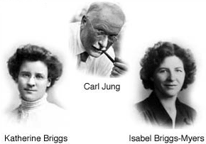

MBTI职业性格测试完整版
注：MBTI模型源自荣格(瑞士)与Myers-Briggs(美国)
【引导语】“我性格内向/外向，适合什么工作？”“哪些职业正好匹配我的性格？”“以我的个性从事什么行业好？”“我性格中的优势和劣势是什么？”“我是不是该继续现在从事的职业？” 不论是正待走进职场的毕业生，还是工作了一段时间的人，面对这类问题都会感到困惑——性格因素和职业选择之间到底存在什么样的关联呢？

要回答诸如此类的问题，我们就必须先了解到底性格差异是如何形成的。
瑞士心理学家荣格(Carl Jung)认为：感知和判断是大脑的两大基本功能。大脑做决定的瞬间可以慢动作分解为两个阶段：感知阶段（又分为触觉感知阶段和直觉感知阶段）和判断阶段（又分为感性判断和理性判断阶段）。
为方便我们的理解，我们把大脑做出决定的瞬间直观想象为如下流程：（大脑获取信息后）触觉感知——直觉感知——感性判断——理性判断，最后做出决定。 不过请记住实际上这一过程是在瞬间交织（并非想象中简单的线性）完成的。
了解更多详情 >>
温馨提示：
1、问卷选项没有“对”与“错”之分。请选择你是怎样做的，而不是选择你认为哪样更好。
2、测试的目的是反映最真实的自己。请最大程度放松下来，选择更接近你平时的感受或行为的那项。
重要提示：测试前请务必阅读以下“MBTI核心规则”及“MBTI施测流程和行为规范”：
MBTI核心规则可以浓缩成三个短句：倾向不是能力（Type not trait）、自己的判断才是最符合的判断（Own best judge）、类型无对错（No right or wrong）。
A、MBTI类型不显示能力的强度。问卷通过偏好来确定倾向，而不是能力强度或程度的能力。在这个意义上，它不同于基于性状的工具如16PF，其类型的偏好是对立的两极。
B、个人所认为的自己的类型往往是最符合其自己的判断。MBTI问卷提供报告的类型，可以被认为是可以参照的整体概貌。最佳拟合的过程通常是通过受测者对MBTI四维度两分法的理解，形成其自己的假设的整体类型，并和报告的类型相比较。通过比对，可以帮助受测者确定自己的最佳拟合。
C、类型或偏好没有孰对孰错、孰好孰坏。没有偏好或总的类型被认为比另一种更好或更糟。不同偏好的人有着不同的天赋。
施测流程
MBTI最早源于1913年荣格在慕尼黑国际精神分析会议上提出的人格类型学说。根据长期实践，全球不同研究机构根据本土的语言习惯和文化背景开发了10多个高信效度量表版本。虽然MBTI模型通俗易懂，但实际上MBTI测试仍需要遵循相应的施测流程和行为规范——
第1步 调整心态：MBTI只测试自己的性格类型，而不同性格类型之间没有优劣之分；请放松心情，最大限度地摆脱各种外部环境的压力，尽量展现真实的自我。
第2步 测试的目的是了解真实的自己，而不是别人所期待的你，因此在回答问卷时不是考虑哪样更好，而是哪样更符合你自己。
第3步 答问卷：尽量在一种不假思索的状态下答题，无需过分思考“这道题是测什么的”。遇到一些觉得很纠结，无法取舍的问题是正常的，尽可能选择你在放松时最可能的倾向。
第4步 将第一步测试结果提供的性格类型描述不同部分与自我感觉相比较：通俗描述、气质类型、优势及潜在弱点是否吻合。
第5步 若希望尽可能精确自己的性格类型，可以进一步测试MBTI第二步。
行为规范
受测者需始终处于轻松自如、零压力的状态下完成问卷。
受测者必须正确实施每一个步骤，以便准确理解MBTI的测试结果。MBTI量表的分值代表了受测者对自身性格类型的清楚程度，而非其占有某种性格特征的完全程度或者表现强度；MBTI提供的性格类型描述仅供受测者确定自己的性格类型之用，MBTI的有效性取决于施测中规范、有序地执行每一个环节。
MBTI旨在帮助人们了解自我的本来面目，即个人与生俱来的性格；既然后天的种种环境压力和客观条件可能扭曲甚至彻底逆转个人的行为表现，那么对自己性格最有发言权的当然只能是受测者自己。MBTI就像一个经验丰富的“开道者”（而不是诊断病因的医生）提着灯笼照亮你面前的路却从不在意你去向何方——无论你的目的地在哪里，他只管提着灯笼照亮你的前方；然而，没有这样一名开道者你便陷于沉沉黑暗之中无所适从。
MBTI的评估系统说到底就是不断引导人们暴露、进而认清自我的本来面目。甚至量表得分也只是一种辅助或者参考，当测试结果与自评结果不合时，MBTI不会一味坚持量表的得分，然后拿出一纸对应的行为描述来说服你接受这样的结果。最清楚自己性格的当然恰是你自己——无论从理论上还是实践中都是如此——这也正是MBTI的理念。
总之，MBTI可以帮助我们认清自己，但是并不剥夺我们认知的自由，把结论强加于人； MBTI可以有效地评估我们的性格类型；引导我们建立自信，信任并理解他人；进而在职业定位和发展、团队建设、领导力人格基础发展、人际工作关系、员工素质、组织内部沟通以及跨文化企业管理等领域为我们提供前所未有的帮助。
MBTI已经有了七十多年的广泛应用，实践证明该模型是行之有效的，而这有赖于我们恪守施测流程和测试行为规范。只有这样，MBTI才能真正帮助我们认识自我、发现自我，迈出职业发展和职业规划最重要的一步。